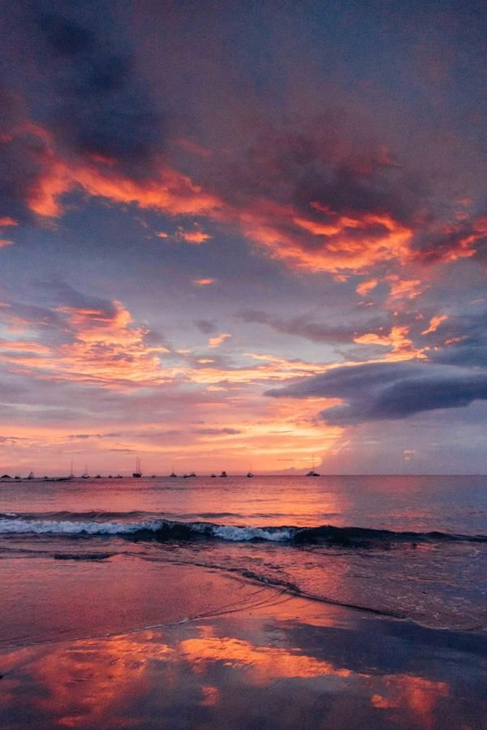
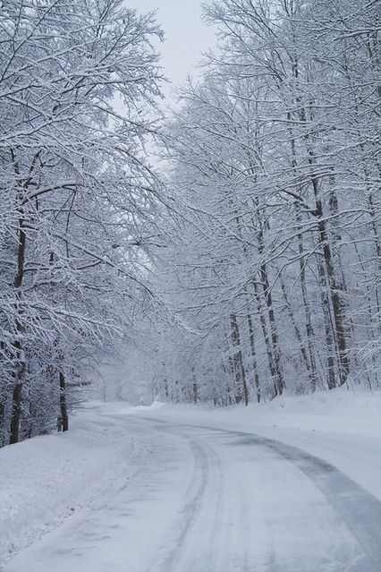

Stinët janë faza të ndryshueshme të vitit që ndikojnë në jetën tonë dhe natyrën përreth nesh. Përmes gjuhës së shenjave, këto stinë mund të shprehen në mënyra të ndryshme, duke i dhënë mundësinë individëve me aftësi të kufizuara për të komunikuar ndjesitë dhe veprimet që lidhen me çdo stinë. Ja si mund t’i shprehim ato:
Klikoni në kutitë më poshtë për të parë demonstrimet e stinëve në gjuhën e shenjave.